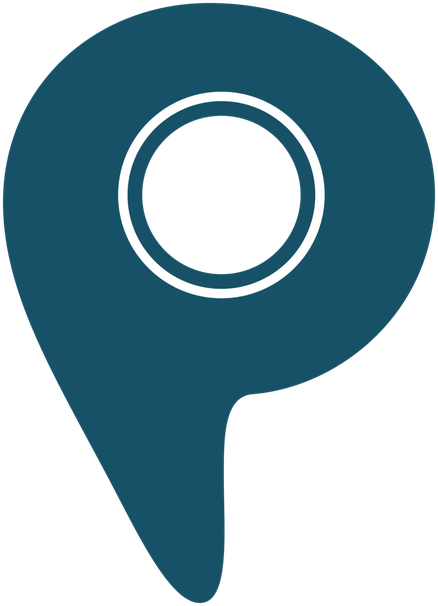
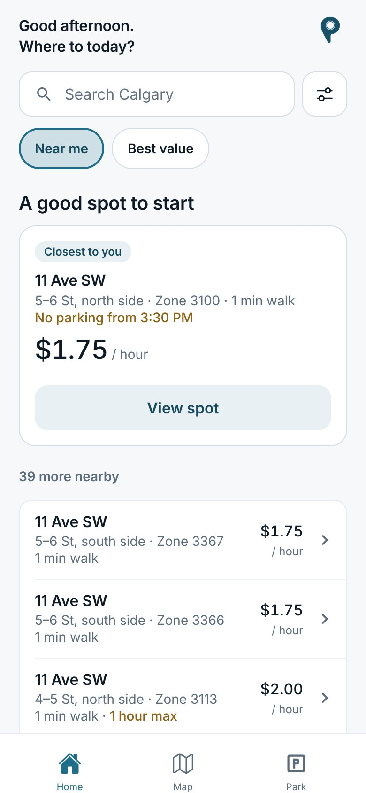
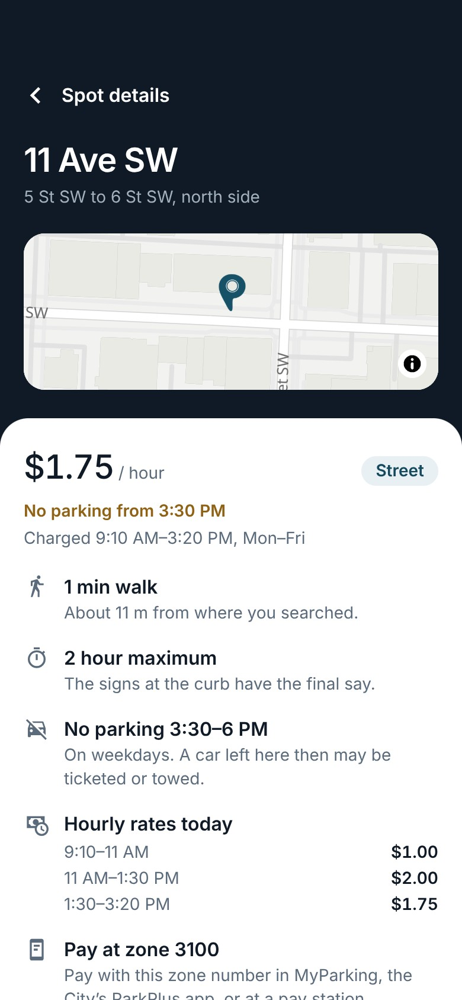
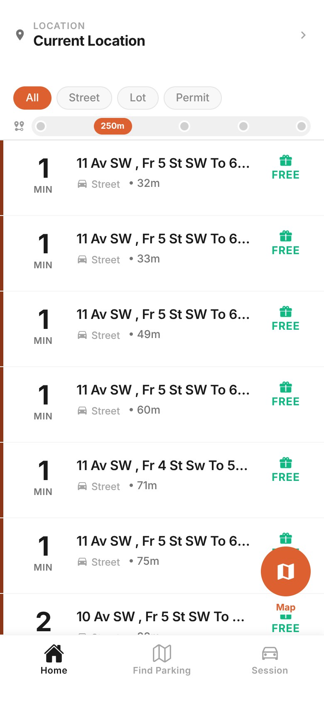
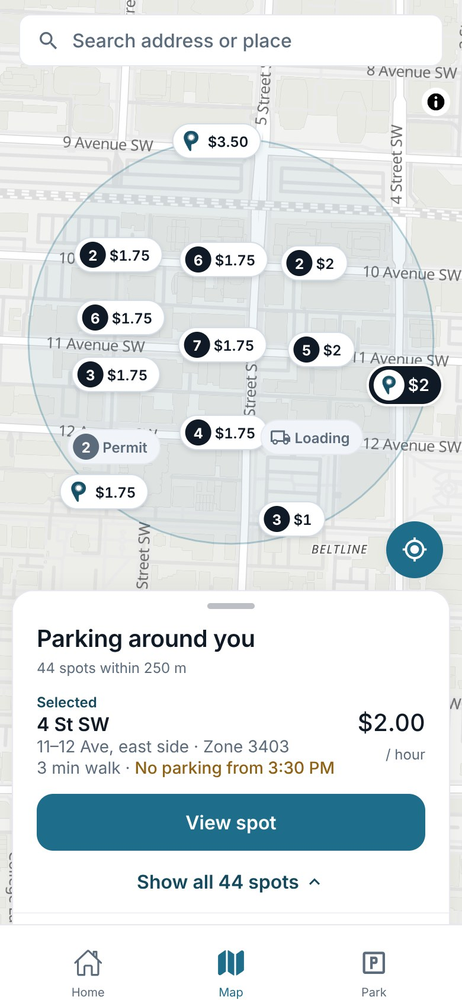
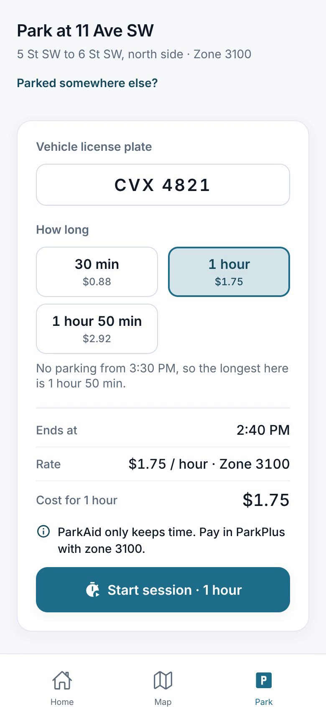

arkAidA mobile app for finding street parking in downtown Calgary, built on the City of Calgary’s open data for parking zones, rates and restrictions.


The capstone version showed prices that did not match the City’s rates, used raw City addresses, and listed the same block several times.
One of five in the capstone. Afterward I continued alone. Claude Code, an AI coding tool, wrote most of the code from March 2026, from my instructions.
The app reads the City’s rates by time of day and its rush-hour rules, shows each block once, and names it by block, side of the street and zone.
Rates and rules match the City’s data for the tested blocks. 45 overlapping pins became 15. 170 automated tests pass. No usability testing yet.
The same blocks on the same Tuesday at 1:40 PM. Left: the capstone code from October 2025. Right: the current version.
| Capstone | Current | ||
|---|---|---|---|
| 1 | Price | FREE, from a lookup on the zone code | $1.75 an hour, the City’s rate now |
| 2 | Location | “11 Av SW , Fr 5 St SW To 6 St SW” | “5–6 St, north side · Zone 3100” |
| 3 | Rows | One row per City segment, so blocks repeat | One row per block: 277 of 1,178 rows were repeats |
| 4 | Rules | Not shown | “No parking from 3:30 PM” |
Numbers match the markers on the screens. Row 3 has no marker on the current screen: the repeats are gone.

The Spot details screen answers four questions for one block: 11 Ave SW, between 5 St and 6 St, north side.
Yes, until 3:30 PM. From 3:30 to 6 PM on weekdays, nobody may park on this block.
$1.75 an hour. The rate changes at 11 AM and 1:30 PM, and the day’s rates are listed further down.
Two hours at most. The app adds that the signs at the curb have the final say.
Zone 3100. One tap copies it for MyParking, the City’s ParkPlus app.
Downtown, the pins pile up. Pins that would touch are grouped, so every pin on the map can be read.
Near me: walking time, then price. Best value: rate now, then distance.
Street, lot, parkade or permit, within 150 m to 1 km. The list and the map share them.
Measured on the opening web view: 45 pins with 44 overlapping became 15 pins with 4 touching.

The Park screen for the same block at 1:40 PM. No parking starts at 3:30 PM.
The capstone version had a demo here: the driver picked a rate of $1.50, $2.50 or $3.50 an hour.

Expo SDK 54|React Native 0.81|React Navigation|react-native-maps|MapLibre GL JS|Node.js|Express|PostgreSQL + PostGIS on Supabase|Render|Jest
| Rates change during the day | The City’s rate bands become time ranges; costs count only charged hours. |
| Rush-hour rules | Checked against the time now and the end of a planned stay. |
| Repeated segments | The API merges rows for the same stretch of a block. |
| Crowded map | Pins grouped by distance on screen, on both map libraries. |
| Android markers | Drawn into 100 × 100 px images, which cut off labels; Android gets a smaller badge. |
In the SAIT capstone, a team of five built the base app: list, map, session screen, API and data import. This repo starts from that code (September 29, 2025), so the team’s commits are not in it. After the capstone, I continued on my own.
Up to October 28, 2026, Claude Code wrote 101 of the 128 commits, from my instructions. 27 are under my accounts; a few came from an OpenAI Codex branch. I decided what to build and fix, and in what order.
| Unit tests | 152 app and 18 backend tests pass |
| Real data | 1,672 City records near 11 Ave SW and 5 St SW |
| Map density | 45 pins (44 overlapping) to 15 (4 touching) |
| Contrast | Gray on selected rows 4.23:1 to 4.74:1; AA is 4.5:1 |
| Keyboard (web) | Pins skipped, the list has them; search first |
| Small screens | At 360 × 640, Add time and End session now on screen |
| Builds | Web at 360, 390, 1280 px; Android bundle |
Recordings: 1 Finding parking, 2 The map, 3 Spot details, 4 Parking, 5 Rush hour, 6 Details while parked, 7 On a laptop. The Figma file is rebuilt from the code; its session screens and prototype links are not finished.
The current screens are the app’s web build in an iPhone-sized window (390 × 844 pt) with iPhone safe areas emulated. The capstone screen is its October 2025 web build, with a plain status bar added above it. All show the City’s records on a Tuesday at 1:40 PM. The phone frames and status bars are drawn on.
This case study was drafted with Claude Code. Its numbers come from the repository and from test runs.